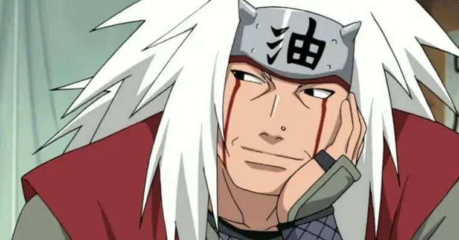

Naruto Uzumaki
Naruto Uzumaki é um ninja enérgico e determinado da Vila da Folha, que sonha em se tornar Hokage para
ser
reconhecido e respeitado. Órfão e portador da Raposa de Nove Caudas selado em seu corpo, ele enfrenta
desafios de acessibilidade e solidão enquanto desenvolve fortes laços de amizade. Com sua persistência,
otimismo e habilidades únicas, ele supera adversidades, inspira aliados e luta pela paz no mundo ninja.
Sasuke Uchiha
Sasuke Uchiha é um ninja talentoso e reservado da renomada linhagem Uchiha, marcada pelo desejo de
vingança após o massacre de sua família por seu irmão, Itachi. Motivado por esse trauma, ele busca poder
a qualquer custo, o que o leva a caminhos sombrios e a se salvar de seus amigos. Embora frio e
calculista, ele enfrenta conflitos internos entre vingança e redenção. Sua jornada é marcada pela luta
para encontrar seu propósito e redefinir seus laços com os outros.
Kakashi Hatake
Kakashi Hatake é um ninja prodigioso e reservado de Konoha, conhecido como o "Ninja Copiador" por
dominar
milhares de jutsus graças ao Sharingan. Marcado pela perda de amigos e pelo senso de dever, ele
inicialmente adota uma postura apática, mas revela profundo cuidado com seus alunos e valores. Como
mentor do Time 7, ele ensina lições de trabalho em equipe e liderança. Apesar de seu passado trágico,
Kakashi é sábio, habilidoso e respeitado como líder e estrategista.
Madara Uchiha

Madara Uchiha é um dos ninjas mais poderosos e influentes da história, conhecido por sua rivalidade com
Hashirama Senju e como líder visionário do clã Uchiha. inicialmente pela paz ao fundar Konoha, mas se
desiludiu com os sistemas humanos, abraçando planos mais extremos para criar um mundo ideal. Astuto e
imensamente habilidoso, ele buscou poder absoluto para implementar sua visão, manipulando eventos
históricos. Seu legado é marcado pela ambição de controlar o destino do mundo ninja, mesmo o custo de
sacrifícios.
Hashirama Senju

Hashirama Senju, o Primeiro Hokage, é um ninja lendário conhecido como o "Deus Shinobi" devido à sua
habilidade incomparável com jutsus de Liberação de Madeira e força física. Fundador de Konoha, ele
sonhava com a paz entre clãs e trabalhou para unir o mundo ninja, muitas vezes mediando conflitos com
seu amigo e rival, Madara Uchiha. Apesar de seu imenso poder, Hashirama era descontraído, bondoso e
priorizava o bem-estar das futuras gerações. Seu legado como líder visionário moldou os ideais de Konoha
e do sistema ninja.
Minato Namikazi
Minato Namikaze, o Quarto Hokage, é conhecido como o "Relâmpago Amarelo de Konoha" por sua velocidade
incomparável e habilidades com o Jutsu de Teletransporte. Ele é um líder brilhante e estrategista, que
sacrificou sua vida para selar a Raposa de Nove Caudas em seu filho, Naruto, protegendo a vila. Minato
era gentil, humilde e profundamente dedicado ao bem-estar dos outros. Seu legado como herói e pai
inspira gerações de ninjas.
Jiraiya

Jiraiya é um lendário Sannin de Konoha, conhecido tanto por sua força como ninja quanto por seu
comportamento excêntrico e humorístico. Mestre em ninjutsu e invocações, ele viaja pelo mundo em busca
de conhecimento e inspiração para seus livros, além de proteger o equilíbrio do mundo ninja. Mentor de
grandes figuras como Minato e Naruto, ele não acreditava no poder da próxima geração para trazer paz.
Apesar de seu jeito descontraído, Jiraiya era sincero, dedicado e sacrificado tudo por seus ideais e por
aqueles que amava.
Nagato Uzumaki
Nagato, também conhecido como Pain, foi um órfão de guerra e discípulo de Jiraiya, que buscava a paz no
mundo ninja. Após perder amigos e sofrer inúmeras tragédias, ele desenvolveu uma visão sombria e
radical, liderando a Akatsuki para impor a paz pelo medo e poder. Portador do Rinnegan, suas habilidades
extraordinárias o tornaram temido e reverenciado. Apesar de seus métodos extremos, ele acreditava estar
cumprindo um propósito maior.
Orochimaru
Orochimaru é um dos lendários Sannin de Konoha, conhecido por sua obsessão por imortalidade e
conhecimento proibido. Ambicioso e cruel, ele realiza experimentos sombrios para desvendar os segredos
da vida e alcançar o poder absoluto. Expulso de Konoha, tornou-se um dos principais antagonistas,
manipulando eventos e pessoas para seus objetivos. Apesar de suas ações, ele demonstra fascínio pelo
potencial humano e, eventualmente, passa a observar o mundo de forma mais neutra. Sua complexidade torna
um personagem intrigante e imprevisível.
Gaara
Gaara é o atual Kazekage da Vila da Areia, inicialmente um órfão traumatizado, criado para ser uma arma
de guerra. Portador da Shukaku, a raposa de uma cauda, ele cresceu isolado e com ódio devido ao medo e
isolado dos outros. Sua jornada de redenção começa quando se torna líder e aprende a valorizar a amizade
e a proteção de seu povo. Gaara, antes cruel e vingativo, se transforma em um líder compassivo. Sua
evolução reflete o poder do vínculo e da compreensão.